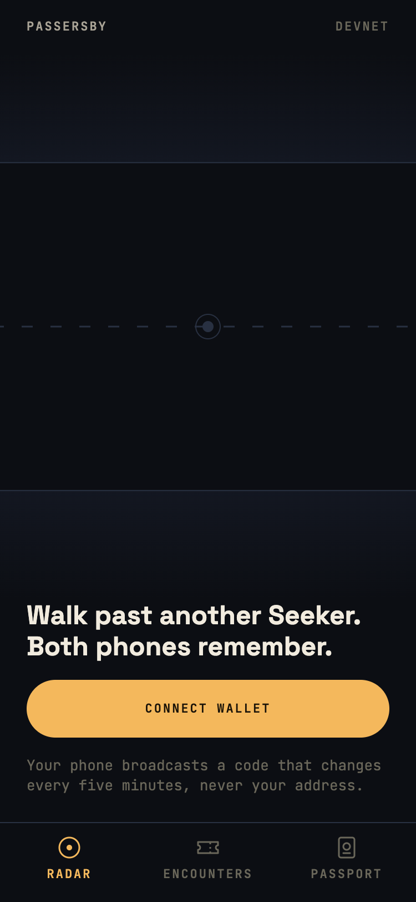
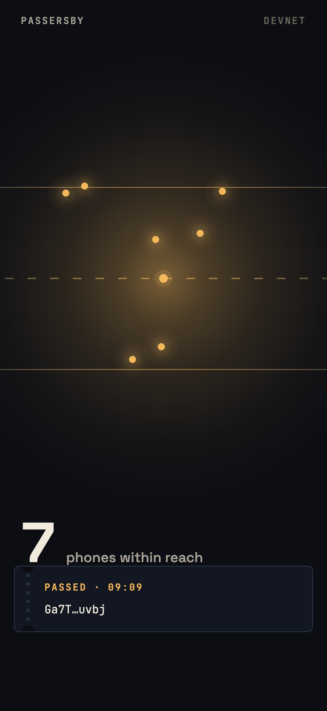
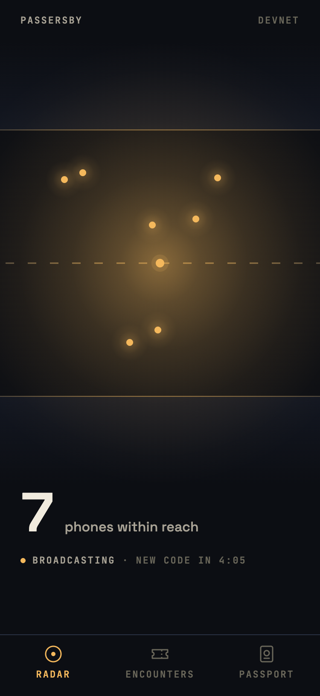
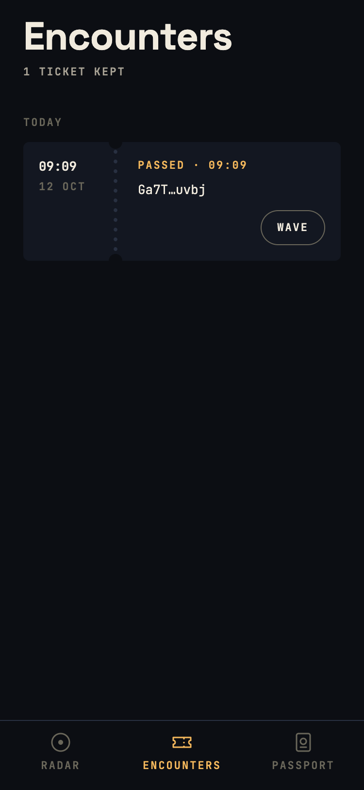
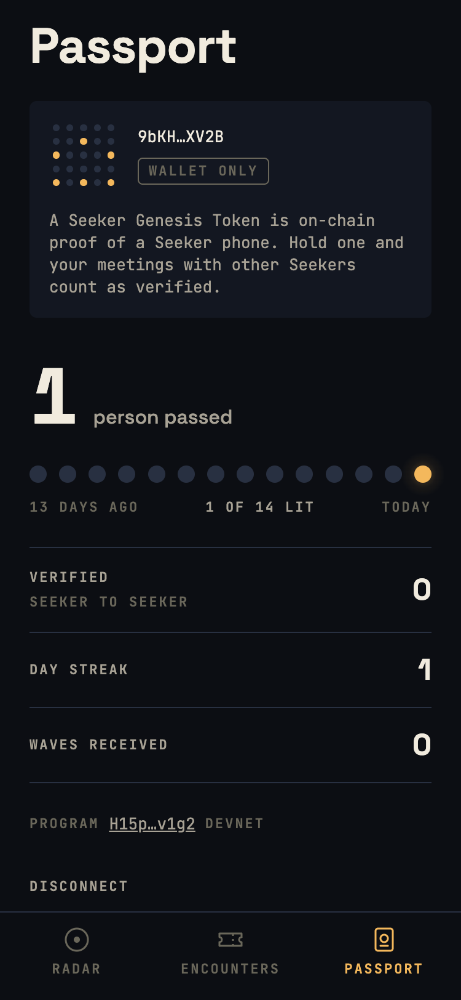

Walk past another Seeker.
Both phones remember.
"useless paperweight"
Seeker owner, x.com/hammerfrog64/status/2014458973861396633
The phone has little reason to be opened. Meanwhile every crypto social graph is farmable from a laptop.

Phones that pass each other on the street record the crossing on Solana.
Only a phone in a pocket can do this.



A native Kotlin module advertises a rotating Bluetooth LE token: an HMAC of identity and the 5-minute epoch, manufacturer id 0xFFFF.
Phones report what they hear to the server. A one-way sighting never counts.
Both phones heard each other. The server signs an Ed25519 attestation.
The server relays record_encounter to the Solana program.
The program writes Encounter at ["encounter", lo, hi, day], one per pair per day, and updates both streaks.
The Seeker Genesis Token is one per device, so a verified encounter is two distinct phones in one place. An in-person graph that can't be faked from a laptop.
Waving sends SKR. The program checks the signer is named on the encounter, so every wave has a crossing behind it.
The daily return loop: streaks and the 14-day lamp row.
Built for meetups, hacker houses and Breakpoint, where Seekers fill one room. Every room is a street.
github.com/kamalbuilds/passersby